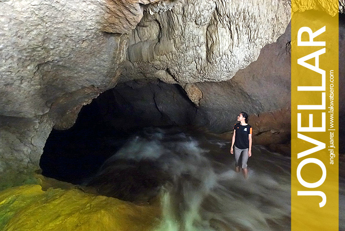

Located in the town of Jovellar of Albay Province, Quitinday Falls and Underground River recently gained attention via social media and instantly became a tourism hotspot since then. Originally called as Naglaus Underground River, it features a cave with a freely flowing cold water that falls into a gorge. The cave is approximately 150 meters long decorated with stalactites, stalagmites, columns and various rock formations. It can be navigated by riding a bamboo raft along the underground river that ends on a two-tier smaller cascades. Claustrophobics may take the easy trail going to the cave’s end.
Jovellar, AlbayTo get here, make your way to Camalig and drop off at Quitinday Junction / Diversion Road. Charter a tricycle from the junction to take you to the site. Trike rate is P500/round trip good for maximum of five passengers, travel time is around 45 minutes one-way. Pay the P20 environmental fee then trek for 15 minutes, no need for a guide.